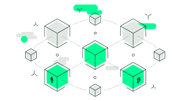
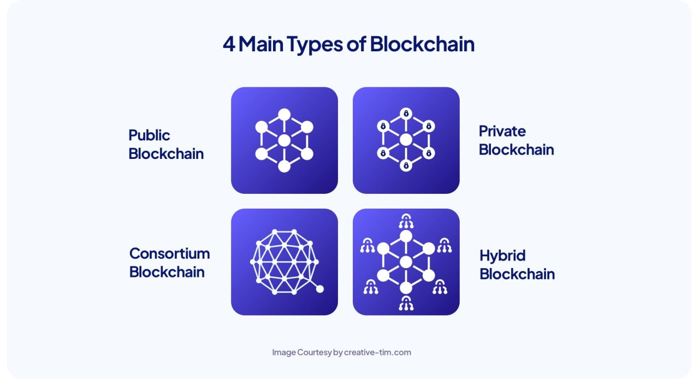

Blockchain adalah teknologi buku besar digital terdistribusi yang memungkinkan data disimpan secara aman, transparan, dan tidak dapat diubah tanpa persetujuan jaringan. Setiap data dicatat dalam blok yang saling terhubung secara kriptografis. Teknologi ini mendasari mata uang kripto seperti Bitcoin, tetapi penerapannya meluas ke banyak sektor seperti keuangan, logistik, kesehatan, dan bahkan pemerintahan. Keunggulan blockchain adalah desentralisasi—tidak ada pihak tunggal yang mengendalikan sistem—dan sifatnya yang transparan, karena semua transaksi dapat diverifikasi oleh publik atau jaringan yang berizin.
Konsep awal Blockchain dimulai pada tahun 1991 oleh Stuart Haber dan W. Scott Stornetta, yang mengusulkan sistem kriptografi untuk mencatat dokumen dengan waktu yang tidak dapat dimanipulasi. Namun, teknologi ini mulai dikenal luas sejak Bitcoin diperkenalkan oleh Satoshi Nakamoto pada tahun 2008 melalui whitepaper berjudul "Bitcoin: A Peer-to-Peer Electronic Cash System". Bitcoin menggunakan blockchain untuk mencatat semua transaksi tanpa perlu perantara seperti bank. Seiring waktu, muncul generasi blockchain berikutnya seperti Ethereum yang memperkenalkan smart contract, memungkinkan otomatisasi dan kompleksitas dalam sistem desentralisasi.
Blockchain bekerja melalui sistem peer-to-peer dan konsensus, dengan langkah-langkah umum seperti:
Setiap blok berisi informasi penting seperti:
Teknologi basis data tradisional menghadirkan beberapa tantangan dalam pencatatan transaksi keuangan. Sebagai contoh, bisa dilihat di kasus penjualan properti. Setelah uang dibayarkan, kepemilikan properti dialihkan ke pembeli. Secara individu, baik pembeli maupun penjual dapat mencatat transaksi moneter, tetapi tidak ada sumber yang dapat dipercaya. Penjual dapat dengan mudah mengeklaim bahwa mereka belum menerima uang meskipun sudah menerimanya, dan pembeli dapat sama-sama berargumen bahwa mereka telah membayar uang meskipun belum membayarkannya.
Untuk menghindari potensi masalah hukum, pihak ketiga yang tepercaya harus mengawasi dan memvalidasi transaksi. Kehadiran otoritas pusat ini tidak hanya merumitkan transaksi tetapi juga menciptakan satu titik kelemahan. Jika basis data pusat disusupi, kedua belah pihak akan dirugikan.
Blockchain mengurangi masalah tersebut dengan menciptakan sistem yang terdesentralisasi dan antirusak untuk mencatat transaksi. Dalam skenario transaksi properti, blockchain membuat buku besar, masing-masing satu untuk pembeli dan penjual. Semua transaksi harus disetujui oleh kedua belah pihak dan secara otomatis diperbarui di kedua buku besar secara waktu nyata. Setiap perubahan dalam transaksi historis akan merusak seluruh buku besar. Properti blockchain ini telah digunakan di berbagai sektor, termasuk pembuatan mata uang digital seperti Bitcoin.
Blockchain adalah teknologi baru yang diadopsi secara inovatif oleh berbagai industri. Kami menjelaskan beberapa kasus penggunaan di industri yang berbeda dalam subbagian berikut:
Energi
Keuangan
Dengan inisiatif crowdfunding berbasis blockchain, pengguna dapat mensponsori dan memiliki panel surya di masyarakat yang kekurangan akses energi. Sponsor juga dapat menyewakan panel surya untuk masyarakat ini setelah dibangun.
Sistem keuangan tradisional, seperti bank dan bursa saham, menggunakan layanan blockchain untuk mengelola pembayaran, akun, dan perdagangan pasar online. Misalnya, Singapore Exchange Limited, sebuah perusahaan induk investasi yang menyediakan layanan perdagangan keuangan di seluruh Asia, menggunakan teknologi blockchain untuk membangun akun pembayaran antar bank yang lebih efisien. Dengan mengadopsi blockchain, Singapore Exchange Limited memecahkan beberapa kesulitan, termasuk pemrosesan batch dan rekonsiliasi manual dari beberapa ribu transaksi keuangan.
Retail
Perusahaan di media dan hiburan menggunakan sistem blockchain untuk mengelola data hak cipta. Verifikasi hak cipta sangat penting untuk kompensasi yang adil bagi artis. Dibutuhkan beberapa transaksi untuk mencatat penjualan atau transfer konten hak cipta. Sony Music Entertainment Japan menggunakan layanan blockchain untuk menjadikan manajemen hak digital lebih efisien. Sony Music Entertainment Japan telah berhasil menggunakan strategi blockchain untuk meningkatkan produktivitas dan mengurangi biaya dalam pemrosesan hak cipta.
Teknologi blockchain memiliki fitur utama sebagai berikut:
Desentralisasi
Desentralisasi dalam blockchain mengacu pada kontrol transfer dan pengambilan keputusan dari entitas terpusat (individu, organisasi, atau grup) ke jaringan terdistribusi. Jaringan blockchain yang terdesentralisasi menggunakan transparansi untuk mengurangi kebutuhan akan kepercayaan di antara para peserta. Jaringan ini juga menghalangi peserta untuk tidak menggunakan otoritas atau kontrol satu sama lain dengan cara yang dapat menurunkan fungsionalitas jaringan.
Ketetapan
Ketetapan berarti sesuatu yang tidak dapat diubah atau ditukar.
Tidak ada peserta yang dapat mengutak-atik transaksi setelah dicatat ke buku besar bersama. Jika catatan transaksi berisi kesalahan, Anda harus menambahkan transaksi baru untuk membalikkan kesalahan tersebut, dan kedua transaksi tersebut dapat dilihat oleh jaringan.
Konsensus
Sistem blockchain menetapkan aturan mengenai persetujuan peserta untuk mencatat transaksi.
Anda dapat mencatat transaksi baru hanya jika mayoritas peserta dalam jaringan memberikan persetujuan mereka.
Transparansi
Transparansi pada blockchain berarti semua transaksi atau data yang tercatat bisa dilihat oleh siapa saja di jaringan.
Karena datanya tersimpan di banyak node dan tidak bisa diubah tanpa persetujuan mayoritas, ini membuat sistem lebih terbuka, bisa diaudit, dan sulit dimanipulasi.
Arsitektur blockchain memiliki komponen utama berikut :
Buku besar terdistribusi
Buku besar terdistribusi adalah basis data bersama di jaringan blockchain yang menyimpan transaksi, seperti file bersama yang dapat diedit oleh semua orang dalam tim. Di sebagian besar editor teks bersama, setiap pihak yang memiliki hak pengeditan dapat menghapus seluruh file. Namun, teknologi buku besar terdistribusi memiliki aturan ketat mengenai pihak yang dapat mengedit dan cara mengeditnya. Anda tidak dapat menghapus entri setelah dicatat.
Kontrak pintar
Perusahaan menggunakan kontrak pintar untuk mengelola kontrak bisnis mandiri tanpa perlu bantuan pihak ketiga. Kontrak pintar adalah program yang disimpan di sistem blockchain yang berjalan secara otomatis ketika kondisi yang telah ditentukan terpenuhi. Kontrak pintar menjalankan pemeriksaan “jika-maka” sehingga transaksi dapat diselesaikan dengan penuh keyakinan. Misalnya, perusahaan logistik dapat memiliki kontrak cerdas yang melakukan pembayaran secara otomatis setelah barang tiba di pelabuhan.
Kriptografi kunci publik
Kriptografi kunci publik adalah fitur keamanan untuk mengidentifikasi peserta secara unik dalam jaringan blockchain. Mekanisme ini menghasilkan dua set kunci untuk anggota jaringan. Salah satu kunci adalah kunci publik yang umum untuk semua orang di jaringan. Kunci yang lainnya adalah kunci privat yang unik untuk setiap anggota. Kunci privat dan publik bekerja sama untuk membuka kunci data dalam buku besar.
Misalnya, John dan Jill adalah dua anggota jaringan. John mencatat transaksi yang dienkripsi dengan kunci privatnya. Jill dapat mendekripsinya dengan kunci publiknya. Dengan cara ini, Jill yakin bahwa John telah melakukan transaksi. Kunci publik Jill tidak akan berfungsi jika kunci privat John telah dirusak.
Ada empat tipe utama jaringan terdesentralisasi atau terdistribusi di blockchain:

Jaringan blockchain publik
Blockchain publik tidak membutuhkan izin dan memungkinkan semua orang untuk dapat bergabung. Semua anggota blockchain memiliki hak yang sama untuk membaca, mengedit, dan memvalidasi blockchain. Orang-orang umumnya menggunakan blockchain publik untuk bertukar dan menambang mata uang kripto seperti Bitcoin, Ethereum, dan Litecoin.
Jaringan blockchain privat
Satu organisasi mengontrol blockchain privat, yang juga disebut blockchain terkelola. Otoritas menentukan siapa saja yang dapat menjadi anggota dan hak apa saja yang dimiliki dalam jaringan. Blockchain privat hanya terdesentralisasi sebagian karena memiliki batasan akses. Ripple, jaringan pertukaran mata uang digital untuk bisnis, adalah contoh dari blockchain privat.
Jaringan blockchain hibrida
Blockchain hibrida menggabungkan elemen dari jaringan privat dan publik. Perusahaan dapat mengatur sistem berbasis izin privat bersama dengan sistem publik. Dengan cara ini, perusahaan dapat mengontrol akses ke data tertentu yang disimpan di blockchain sekaligus menjaga data publik lainnya. Perusahaan menggunakan kontrak pintar yang memungkinkan anggota publik untuk memeriksa jika transaksi privat telah selesai. Misalnya, blockchain hibrida dapat memberikan akses publik ke mata uang digital sekaligus menjaga mata uang milik bank tetap privat.
Jaringan blockchain konsorsium
Sekelompok organisasi mengatur jaringan blockchain konsorsium. Organisasi yang dipilih sebelumnya berbagi tanggung jawab untuk memelihara blockchain dan menentukan hak akses data. Industri yang banyak organisasinya memiliki tujuan bersama dan mendapat manfaat dari tanggung jawab bersama sering kali lebih memilih jaringan blockchain konsorsium. Misalnya, Konsorsium Jaringan Bisnis Pengiriman Global adalah konsorsium blockchain nirlaba yang bertujuan untuk mendigitalkan industri perkapalan dan meningkatkan kolaborasi antaroperator industri maritim.